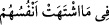
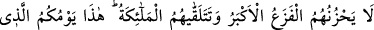
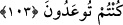
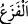
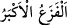

Câfer Sâdık şöyle der: “Onlar cehennemin uğultusunu nasıl duyarlar ki?! Çünkü onlar
baktığı zaman cehennemin ateşi söner ve onlar gördüğü zaman yok olur.” Bir hadiste
şöyle buyrulmuştur: “Kıyâmet gününde cehennem ateşi mü’mine şöyle der: “Çabuk
geç ey mü’min, senin nûrun benim alevimi söndürdü.”[218]
Mesnevî’de der ki:
A seçkin kişi, mü’minin ateşinden
Cehennem zayıflayıp söner
Cehennem ona, “Çabuk geç ey ulu” der
“Yoksa senin ateşlerin yüzünden benim ateşim söner”
et-Te’vîlâtü’n-Necmiyye’de şöyle der: “Ezelî inâyetin takdir olunduğunu tercih eden
kimse kahır cehenneminin uğultusunu işitmez. Onun uğultusu ise hevâ ve bid’at ehlinin
sözleri, felsefecilerin ortaya attıkları deliller, onların vehm ve hayal ile karışık aklî
burhanları ve tabîatın zulmetidir.”
“Gönüllerinin dilediği nimetler içinde ebedî kalırlar.” Sonsuz nimetlerden ve
gönüllerinin çektiği şeylerden dâimâ yararlanırlar. “eş-Şehvetü” nefsin lezzet taleb
etmesidir. Burada zarfın
öne alınması, kasr (sınırlama) ve ihtimâm
içindir. Bu da onların tehlikelerden kurtulduklarını açıkladıktan sonra arzuladıkları
şeyleri elde ettiklerinin beyânıdır.
İbn Atâ şöyle der: “Kalblerin bir arzusu, ruhların bir arzusu ve nefislerin de bir
arzusu vardır. Allah onlar için bunların hepsini cennette bir araya getirir. Rûhların
arzusu kurb (yakınlık), kalblerin arzusu müşâhede, nefislerin arzusu ise rahatlık, yeme,
içme ve ziynetlerden lezzet almaktır.”
103. En büyük dehşet dahi onları tasalandırmaz. Melekler kendilerini şöyle
karşılar: “İşte bu size vaadedilmiş olan (mutlu) gününüzdür.”
“En büyük dehşet dahi onları tasalandırmaz.” Daha önce mü’minlerin cehennem
ateşinden kurtulacakları açıklandıktan sonra burada onların bütün korkulardan emin
olacakları beyân edilmektedir. Çünkü, en büyük dehşet/korku bile onları
tasalandırmadığına göre, diğer korkulacak haller elbette tasalandırmaz.
“
‘ (dehşet)”; korkunç bir şeyden ötürü insanın ürkmesi ve korkmasıdır. Ve bu “el-
cezâ”-hüzünlenmek, umutsuz olmak” kabilindendir.
Râgıb şöyle der: “
(en büyük dehşet), cehennem ateşine girme korkusudur.”